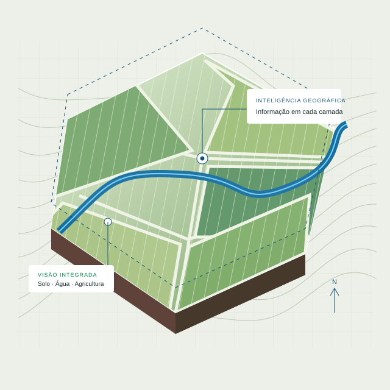

01
Agricultura
Sensoriamento remoto
Imagens e análises para enxergar a variabilidade da lavoura e apoiar as decisões no campo.
Conversar sobre este serviço ↗GEOTECNOLOGIA APLICADA AO CAMPO
Conectamos informação geográfica e conhecimento agronômico para transformar a forma de planejar, entender e cuidar de cada área.

O QUE FAZEMOS
Da leitura do território à aplicação prática: serviços que respeitam as particularidades de cada cliente.
Agricultura
Imagens e análises para enxergar a variabilidade da lavoura e apoiar as decisões no campo.
Conversar sobre este serviço ↗Diagnóstico
Identificação e mapeamento de falhas para orientar a avaliação da qualidade e o manejo da lavoura.
Conversar sobre este serviço ↗Geotecnologia
Rotinas geográficas sob medida para organizar dados, agilizar análises e reduzir tarefas repetitivas.
Conversar sobre este serviço ↗Mapeamento
Transformação de imagens aéreas em ortomosaicos e modelos para análise e planejamento territorial.
Conversar sobre este serviço ↗Planejamento
Projetos geográficos para apoiar o planejamento das áreas e das operações agrícolas.
Conversar sobre este serviço ↗Campo
Informações do terreno para subsidiar projetos, dimensionamentos e a organização das áreas.
Conversar sobre este serviço ↗Cartografia
Mapas temáticos organizados para facilitar a leitura das áreas e a comunicação entre as equipes.
Conversar sobre este serviço ↗Conhecimento
Capacitação e orientação técnica para aplicar a geotecnologia às necessidades da sua operação.
Conversar sobre este serviço ↗A GLOBAL TECH
Acreditamos que a excelência em geotecnologia caminha junto com a conservação das águas, do solo e da biodiversidade.
É esse compromisso que orienta nossas soluções e a forma como trabalhamos com cada cliente.
Conheça a nossa essência →Preservar os recursos hídricos, os ecossistemas aquáticos e sua disponibilidade para o futuro.
Respeitar a qualidade da terra e sua sustentabilidade a longo prazo.
Valorizar a biodiversidade e o equilíbrio dos ecossistemas.
DO PRIMEIRO CONTATO À ENTREGA
Conhecer sua necessidade, sua área e o objetivo do projeto.
Definir o escopo, os dados necessários e as entregas.
Aplicar a tecnologia para gerar informação útil à sua operação.
VAMOS CONVERSAR
Conte o que sua operação precisa. Vamos encontrar o caminho juntos.